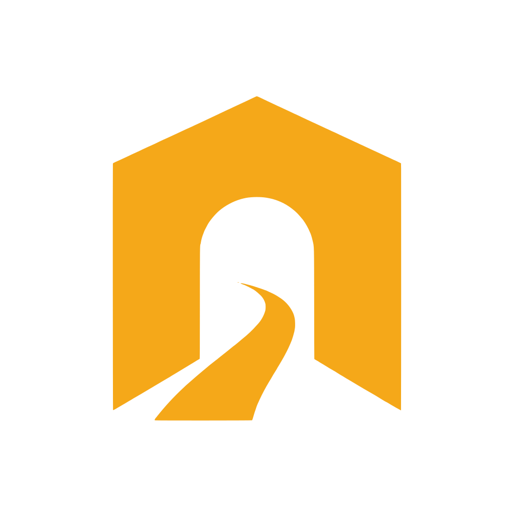

Your localhost, at a public URL
Give a web app running on your machine a public HTTPS URL, for demos, webhooks, or sharing work in progress. Free to use on our hosted service, completely open source, and yours to self-host.
One command. A live public URL in under a second. New here? Read the latest or browse the docs.
How it works
Your machine dials out
-
1
You dial out
Your machine opens one outbound connection. No inbound ports.
-
2
You get a URL
The server hands back a public HTTPS address.
-
3
Traffic flows back
Visitors hit it and requests ride the tunnel to your localhost.
Inspect
Watch every request as it happens
Add --inspect and viaduct prints each request live: method, path, status, and timing. Ideal for debugging webhooks without leaving your terminal.
Optional security
Access control at the edge, when you want it
Opt in to a password, a bearer token, or an IP allowlist, enforced at the edge. See how protection works.
Open source
Built in the open
Completely open source: around 3,500 lines of Python, two dependencies, MIT licensed. The hosted service is free, with no accounts. Read it, fork it, send a patch.
$ git clone https://github.com/webmull/viaduct
Self-hosting
Easiest on a DigitalOcean droplet
viaduct.sh is free and hosted, but the whole thing is yours to run. One Ubuntu droplet and one script sets up Caddy, wildcard TLS, systemd, and the firewall for you. A 1 GB droplet is plenty, and the same script rehearses locally first.
Deployment guide$ pipx install viaduct-sh
$ viaduct http 8080
That second command uses our free hosted service, no signup. Prefer your own? It is the same tool, self-hosted (below). You can also open a tunnel from your own code, in Python, pytest, or Node: see the integrations.